Nine short steps, from install to uninstall. Every block below can be copied with the button in its top right corner.
Tested on Mac and Linux. The Windows lines are standard PowerShell. It all works the same in the terminal inside VS Code.
The slice CLI is a small package on PyPI. It needs Python 3.11 or newer.
Use pipx. It installs command line apps in their own space and puts slice on your PATH. On a new Mac, plain pip install is refused with the words externally managed environment. pipx is the fix, not a workaround.
$ brew install pipx $ pipx ensurepath $ pipx install slice-gateway $ slice --version
$ sudo apt install pipx $ pipx ensurepath $ pipx install slice-gateway $ slice --version
> py -m pip install --user pipx > py -m pipx ensurepath > pipx install slice-gateway > slice --version
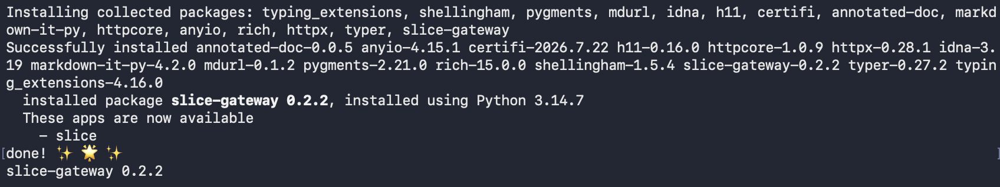
slice --version says command not found after this, close the terminal and open a new one, then try again.
sudo dnf install pipx. On any other distro: python3 -m pip install --user pipx.
If slice --version says command not found, open a new terminal.
Expected output of the last line: slice-gateway 0.2.3 (or newer).
Sign in with GitHub. slice login prints a link and a code, opens the link in your browser, and waits while you click Continue and then Authorize. The terminal then says Logged in as your username, prints your dashboard link, and opens that page too.
$ slice login
> slice login
To finish signing in, open:
https://github.com/login/device
and enter this code:
WXYZ-1234
Waiting for you to authorize in the browser...
Logged in as your username
Your dashboard: https://sliceapp.dev/dashboard
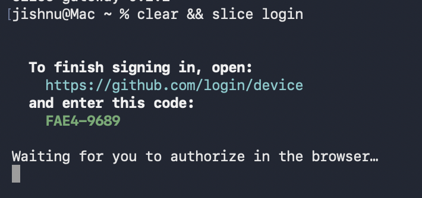
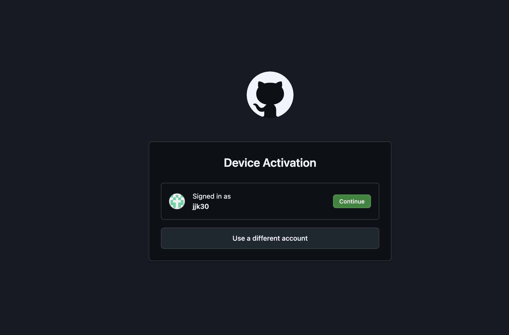
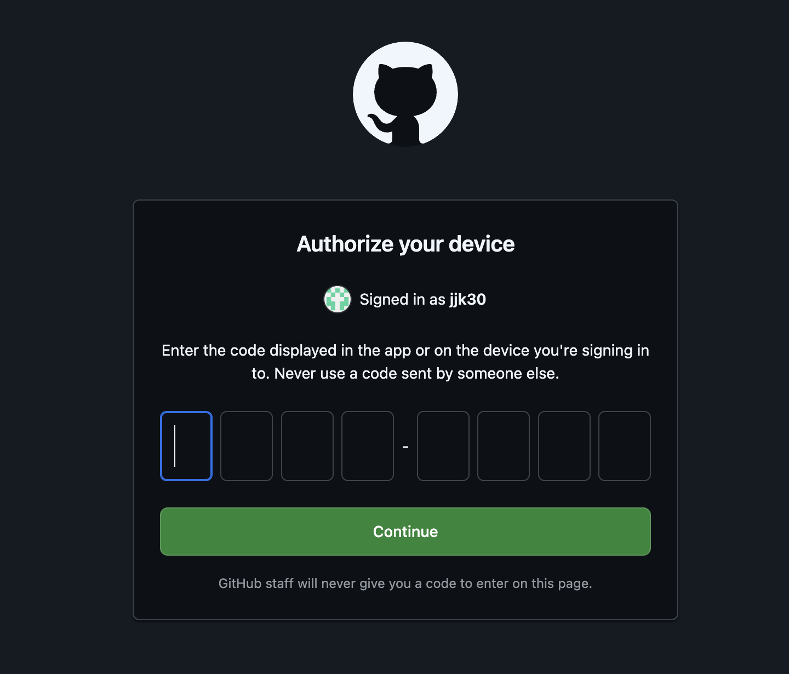
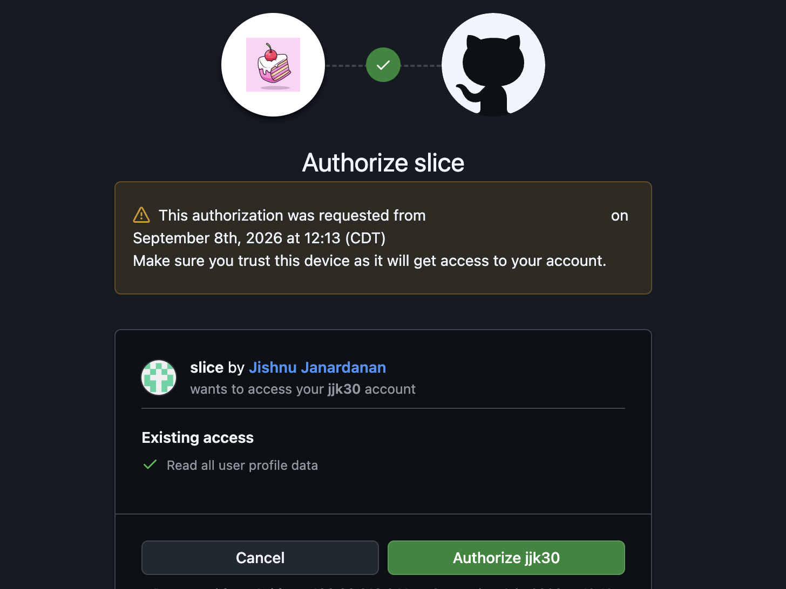
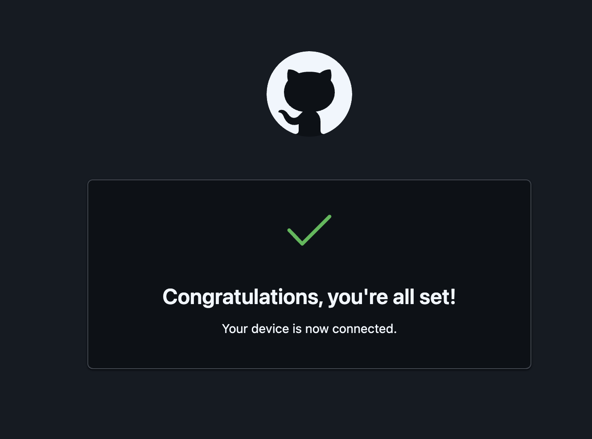
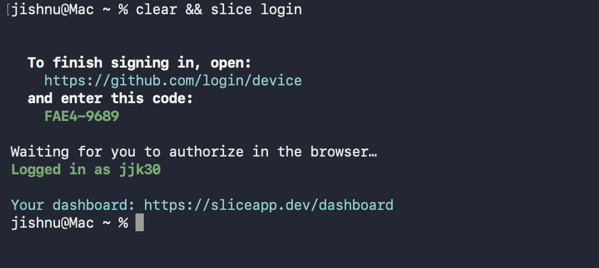
You will see your own GitHub username here.
slice opened sliceapp.dev/dashboard for you, or open it yourself. Click Log in as your username, or Sign in with GitHub in a fresh browser: one click, no forms, because GitHub already trusts slice. The terminal login and the dashboard sign in are two separate doors, both through GitHub.
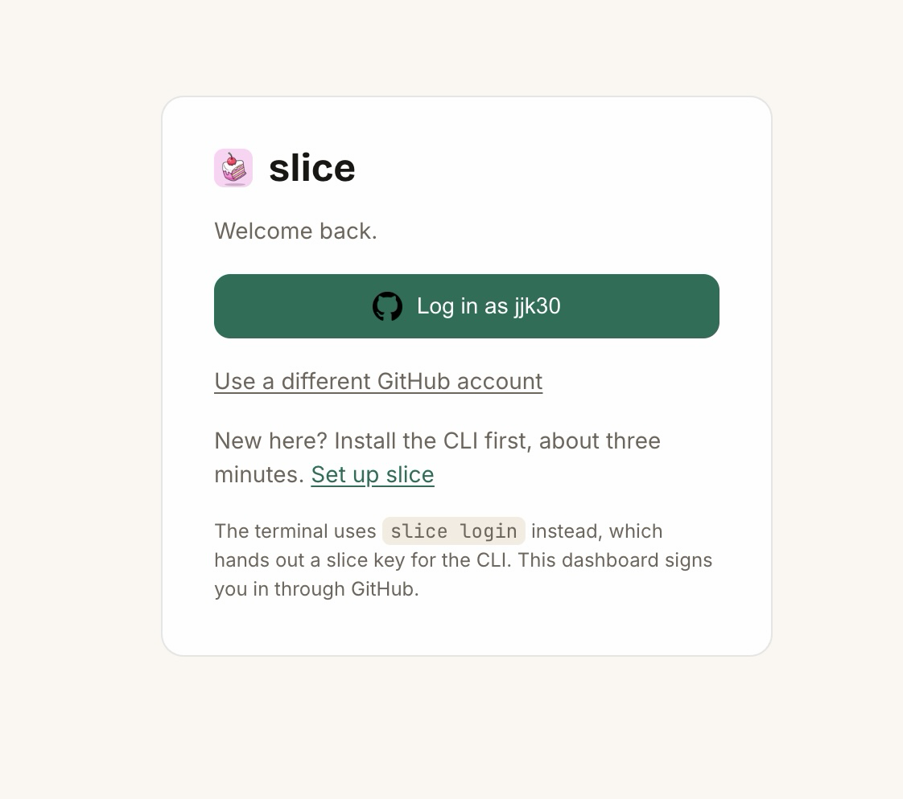
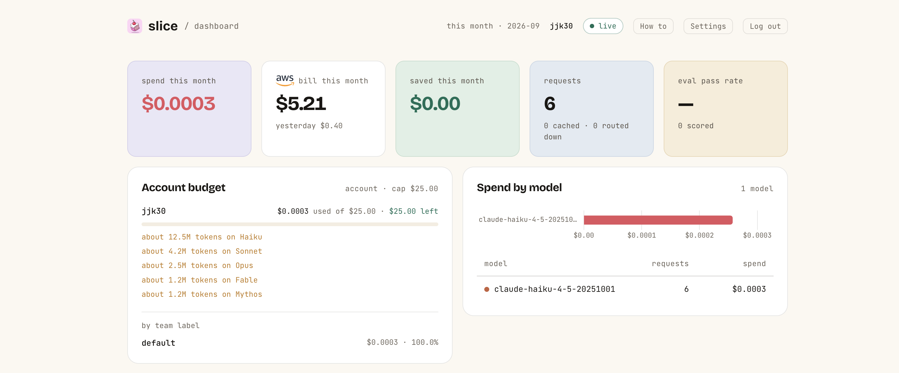
Login mints a slice key. It starts with slk_live_. The CLI saves it to ~/.slice/config.json, readable only by you, and does not print it. It is not shown again. The dashboard shows only its last four characters.
The key is named after your machine, for example cli:Mac.home.local. Run slice login again on the same machine and slice revokes that machine's old key and saves a new one. Keys on your other machines are not touched.
Open the dashboard at sliceapp.dev/dashboard. The card called Your slice key shows your newest live key, masked, with its name and the day it was made.
To check the saved login from the terminal:
$ slice init
> slice init
Gateway: https://api.sliceapp.dev Config: /Users/you/.slice/config.json Logged in as your username (account 1).
Gateway: https://api.sliceapp.dev Config: C:\Users\you\.slice\config.json Logged in as your username (account 1).
slice reads your slice key from the Authorization header. Your own Anthropic key goes in x-api-key, and slice forwards it to Anthropic. Each setup below sends both.
What slice sees, and what it keeps.
Your files never go to slice. Claude Code decides what to send to the model, and only that request passes through slice on its way to Anthropic. slice looks at it just long enough to pick a model and count the tokens, then sends it on.
What it keeps: which model, how many tokens, what it cost, and when. That is what the dashboard is built from.
What it does not keep: your prompt, the answer, your code, or your Anthropic key. The key rides through to Anthropic and is not saved.
Why you can trust that: the request table has those columns and nothing else, and the code is open on GitHub, so you can read it yourself.
Before you start. You need two things first: Claude Code on this machine, and an Anthropic API key. If you already have both, skip to the three lines below.
1. Install Claude Code.
$ curl -fsSL https://claude.ai/install.sh | bash $ claude --version
> irm https://claude.ai/install.ps1 | iex > claude --version
2. Get an Anthropic API key. Open console.anthropic.com, sign in, click API keys, then Create key. Copy it once; it starts with sk-ant-. This is the key that pays Anthropic for your requests. Signing in to Claude Code with a claude.ai subscription does not give you a key and does not work through slice; you need the console key.
Set three variables in the shell where you run Claude Code. slice use claude-code prints the same lines with your key filled in.
export ANTHROPIC_BASE_URL=https://api.sliceapp.dev export ANTHROPIC_API_KEY=(your own Anthropic key) export ANTHROPIC_AUTH_TOKEN=(your slice key)
$env:ANTHROPIC_BASE_URL="https://api.sliceapp.dev" $env:ANTHROPIC_API_KEY="(your own Anthropic key)" $env:ANTHROPIC_AUTH_TOKEN="(your slice key)"
(your own Anthropic key): the key you already use for Claude. If you have one, paste it here. If not, get one at console.anthropic.com under API keys. It starts with sk-ant-.
(your slice key): your slice login key. Starts with slk_live_. Easiest: run slice use claude-code and it prints these three lines with your slice key already in. Or open ~/.slice/config.json and copy it from there.
Delete the brackets when you paste.
Paste the three lines only into your terminal, they hold your key.
These three lines last only for the open terminal window. Close it and you set them again, or put them in your shell profile.
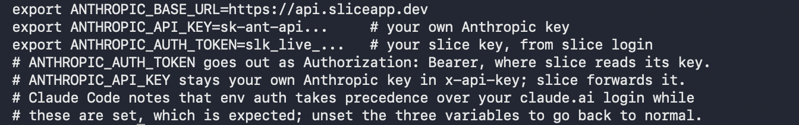
ANTHROPIC_AUTH_TOKEN goes out as Authorization: Bearer, which is where slice reads its key. ANTHROPIC_API_KEY stays your own Anthropic key in x-api-key. Claude Code prints a notice that env auth takes precedence over your claude.ai login while these are set. That is expected. Unset the three variables to go back to normal.
Give the client the slice address, your Anthropic key, and your slice key as the auth token. The SDK also reads the three variables above, so you can leave the keys out of the code.
import anthropic client = anthropic.Anthropic( base_url="https://api.sliceapp.dev", api_key="(your own Anthropic key)", auth_token="(your slice key)", ) message = client.messages.create( model="claude-sonnet-5", max_tokens=64, messages=[{"role": "user", "content": "hi"}], ) print(message.content[0].text)
The same two headers, by hand. This uses the variables from the Claude Code block.
curl https://api.sliceapp.dev/v1/messages \ -H "Authorization: Bearer $ANTHROPIC_AUTH_TOKEN" \ -H "x-api-key: $ANTHROPIC_API_KEY" \ -H "anthropic-version: 2023-06-01" \ -H "content-type: application/json" \ -d '{"model":"claude-sonnet-5","max_tokens":64,' \ '"messages":[{"role":"user","content":"hi"}]}'
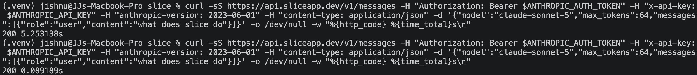
Run it twice. The first call is billed. The second call, with the same body, is served from cache at $0. slice keeps an answer for one hour.
The answer may come from a cheaper model than the one you asked for, and the model field in the answer says which: that is slice saving you money.
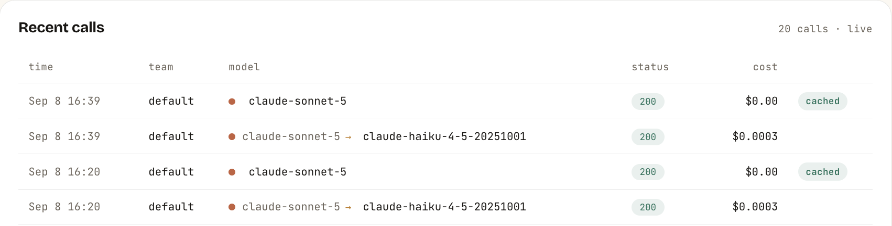
Every step here works in the Mac Terminal, the Linux terminal, PowerShell on Windows, or the terminal inside VS Code. Same commands.
The pictures are from my Mac. Your username, folder names, times, and numbers will look different. That is fine.
1. Get the latest slice. Upgrade the package, then list what pipx put on your machine. You should see both slice and slice-mcp.
$ pipx upgrade slice-gateway $ pipx list
> pipx upgrade slice-gateway > pipx list
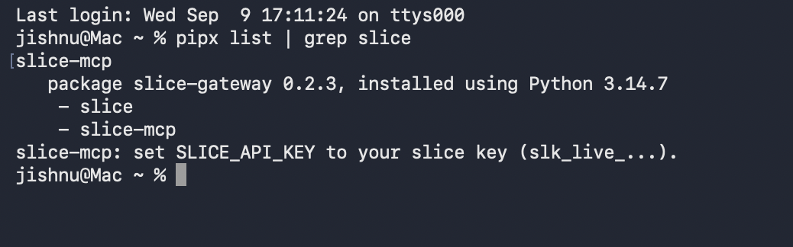
slice-mcp with no key prints a short error. That is expected. It just proves the command is installed.
2. Set your three keys. These are the same three as the Claude Code section above. slice use claude-code prints them with your slice key filled in.
export ANTHROPIC_BASE_URL=https://api.sliceapp.dev export ANTHROPIC_API_KEY=(your own Anthropic key) export ANTHROPIC_AUTH_TOKEN=(your slice key)
$env:ANTHROPIC_BASE_URL="https://api.sliceapp.dev" $env:ANTHROPIC_API_KEY="(your own Anthropic key)" $env:ANTHROPIC_AUTH_TOKEN="(your slice key)"
sk-ant-api and comes from console.anthropic.com. It is the one that pays Anthropic.
The slice key starts slk_live_ and comes from sliceapp.dev/settings. It is your slice login key.
These three lines last only for the open terminal window. Close it and you set them again, or put the three lines in your shell profile.
3. Register the MCP with Claude Code. One command adds it. -s user means it works from any folder, not just the one you are in.
$ claude mcp add slice -s user -e SLICE_API_KEY=$ANTHROPIC_AUTH_TOKEN -- slice-mcp
> claude mcp add slice -s user -e SLICE_API_KEY=$env:ANTHROPIC_AUTH_TOKEN -- slice-mcp
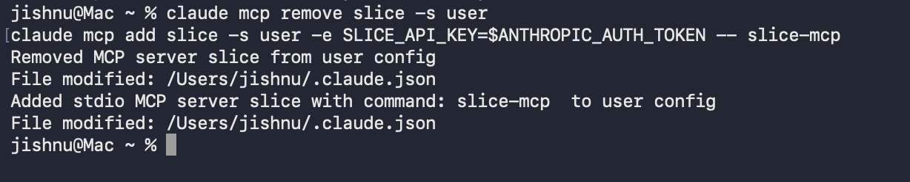
If you ever need to redo it, run claude mcp remove slice -s user first.
4. Start Claude Code. Run claude in your project folder. Two things you may see.
$ claude
> claude
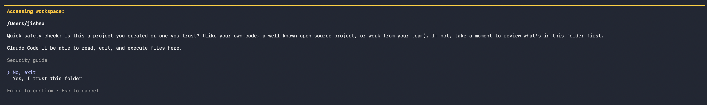
5. Check it is connected. Type /mcp and press Enter. You should see slice, connected, 6 tools.
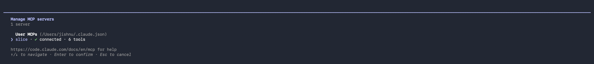
Press Enter on slice to see the details. The command is slice-mcp.
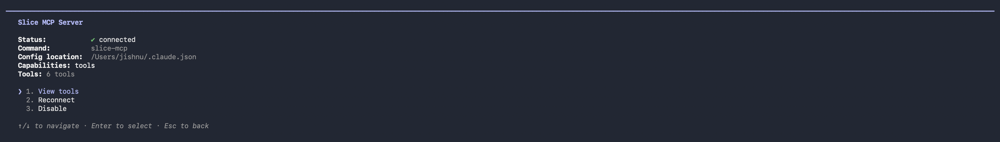
Press Enter on View tools to see the six tools. Press Esc three times to get back to the prompt.
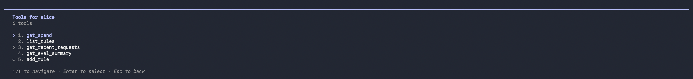
6. Ask it something. Type what is my slice spend this month. The first time, it asks Do you want to proceed?.
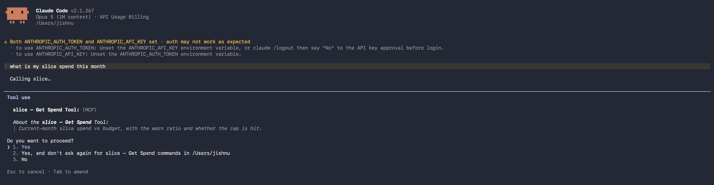
Pick 2, Yes, and don't ask again, so it stops asking for that tool. Pick 1 to be asked every time. Pick 3 to say no. It asks once per tool, so you will see it again for the next tool. Then the answer.
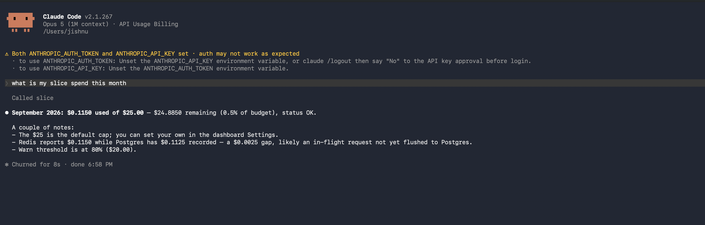
7. Try another. Type what did my last 5 requests cost.
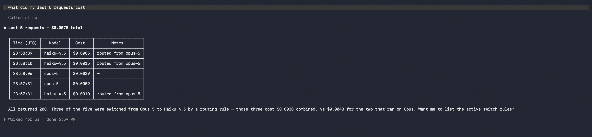
Every request that says routed from opus-5 was answered by Haiku at a fraction of the cost. That is slice working.
get_spend: this month's spend against your budget.list_rules: your model-routing rules.get_recent_requests: your last calls, with model, cost, and time.get_eval_summary: the eval pass rate.add_rule: add a routing rule.delete_rule: remove a routing rule.The dashboard is at sliceapp.dev/dashboard. Sign in with GitHub. The first time, it asks for an email so slice can reach you.
Every account starts on the default cap, $25 a month. Set your own under Monthly budget cap in Settings.
The Account budget panel shows what is used, the cap, and what is left.
Monthly budget exceeded for this account. and costs nothing. A block email goes out.Optional. Connect a read-only role and the dashboard shows your AWS bill next to your AI spend. slice also scans the account once a day for risks and waste.
slice-scanner-role.CREATE_COMPLETE, open its Outputs tab and copy RoleArn.arn:aws:iam::(your AWS account id):role/slice-scanner/(the name CloudFormation gave the role)
(your AWS account id): the 12 digit number shown when you click your name at the top right of the AWS console.
(the name CloudFormation gave the role): on the Outputs tab of the stack once it finishes. Easiest: copy the whole ARN line from Outputs.
Delete the brackets when you paste.
The first scan runs within about an hour. After that, once a day.
It cannot change anything. It cannot read a file in a bucket, a secret, or a password. Only slice's AWS account, 194133064379, can assume the role, and only with your External ID.
To disconnect, delete the slice-scanner-role stack in CloudFormation. slice's access ends the moment the role is gone.
There is no slice action. A workflow step can call the gateway with curl. Store two repository secrets: SLICE_KEY and ANTHROPIC_API_KEY.
Paste the key on its own. When you paste a key into a GitHub secret, make sure nothing comes after it, no Enter and no space. A stray Enter breaks the request and slice answers 400 Request body is not valid JSON. On a Mac you can clean the clipboard first with pbpaste | tr -d '\r\n ' | pbcopy.
A key for CI. Make it in the dashboard: open Your slice key and click Create new key. Copy it once. This revokes every other live key on the account, including your laptop's, so run slice login again afterwards. A CLI login does not revoke a dashboard key.
- name: Ask Claude through slice
env:
ANTHROPIC_AUTH_TOKEN: ${{ secrets.SLICE_KEY }}
ANTHROPIC_API_KEY: ${{ secrets.ANTHROPIC_API_KEY }}
run: |
curl -sS https://api.sliceapp.dev/v1/messages \
-H "Authorization: Bearer $ANTHROPIC_AUTH_TOKEN" \
-H "x-api-key: $ANTHROPIC_API_KEY" \
-H "anthropic-version: 2023-06-01" \
-H "content-type: application/json" \
-d '{"model":"claude-sonnet-5","max_tokens":64,"messages":[{"role":"user","content":"hi"}]}'
Every call from CI shows up in the dashboard and counts against the same account cap.
slice scans a connected AWS account once a day. When a scan finds new high-risk items, you get one email about them, at most one an hour. The budget warning and the block from step 04 arrive the same way.
Each finding is three short lines: what it is, why it matters, and the first thing to do. Then a Read more link to the AWS doc page for that check. Here is one:
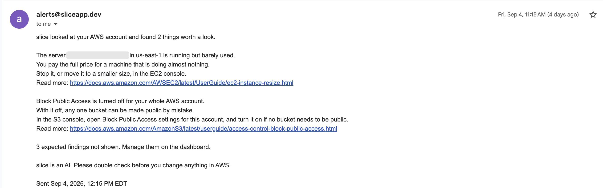
Every email ends with the same line: slice is an AI. Please double check before you change anything in AWS.
Some findings are on purpose, like a bucket that serves a public website. Open the AWS findings panel on the dashboard and turn on the expected switch for that finding. It stays in the list, muted, and leaves the emails until you turn the switch off.
Reply to the email with a question about your own account. For example, how much you spent this month, or what a finding means. slice does not break costs down by week. Send it from the email you saved in Settings. slice answers from your own slice data, in plain words, under 150 words. It never sends commands or scripts to run. If it does not have the number, it says so.
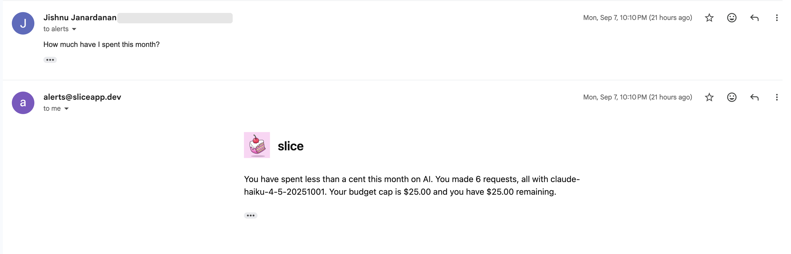
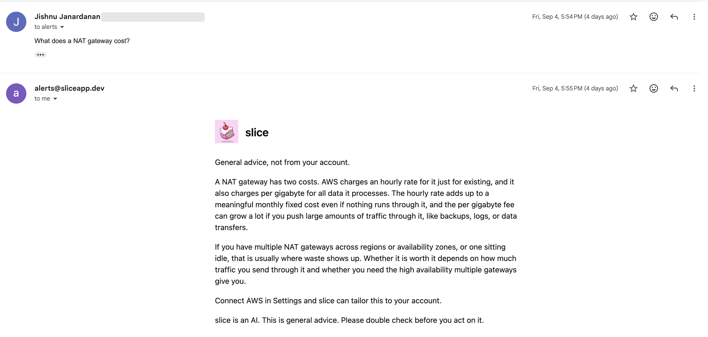
Anything off topic gets one line back: Sorry, I can't help with that here.
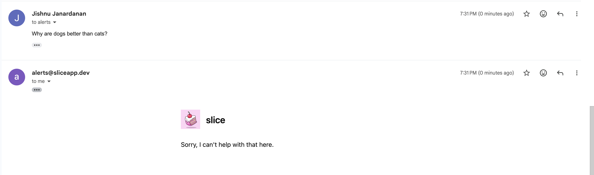
Remove the CLI and its saved key, then revoke the key on the server.
$ pipx uninstall slice-gateway $ rm -rf ~/.slice
> pipx uninstall slice-gateway > Remove-Item -Recurse -Force ~\.slice
ANTHROPIC_BASE_URL, ANTHROPIC_API_KEY, and ANTHROPIC_AUTH_TOKEN from your shell, so your tools talk to Anthropic directly again.slice-scanner-role stack in CloudFormation.Free and open source. Read the code, or run it on your own box.